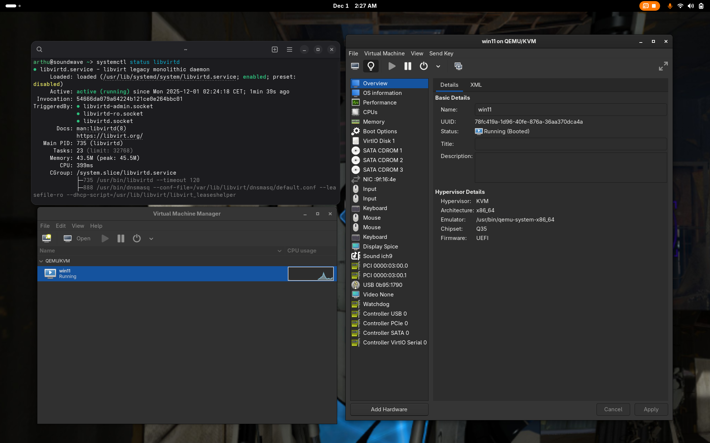
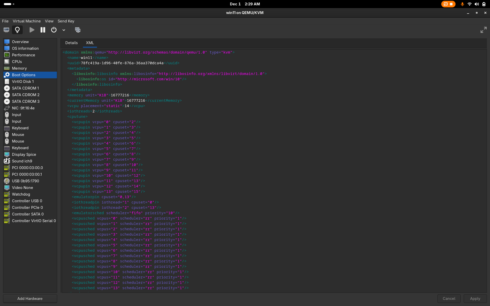
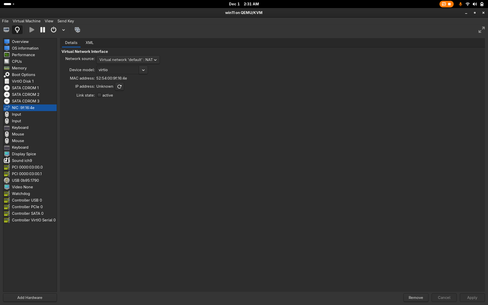
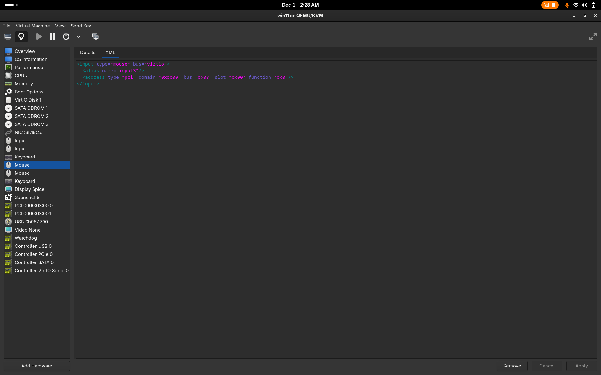
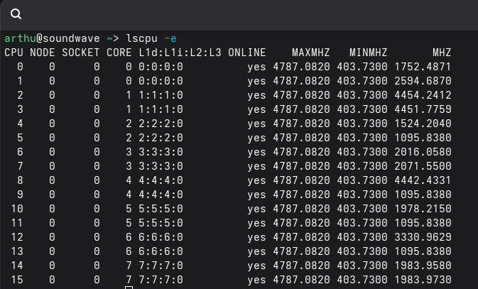
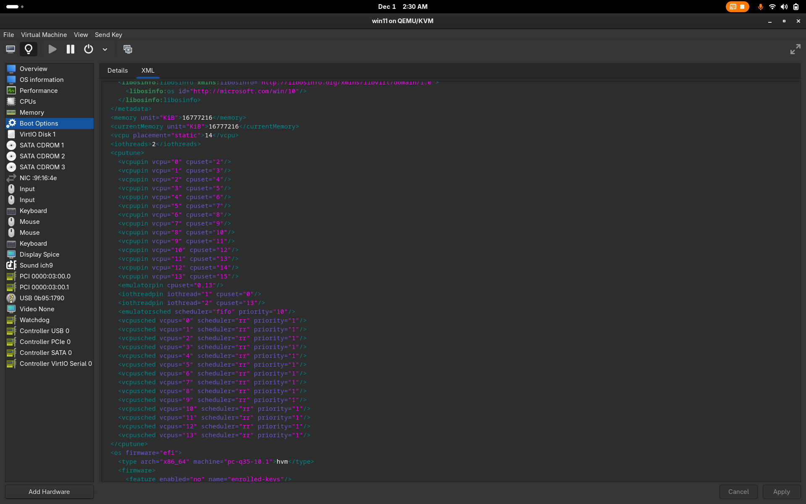
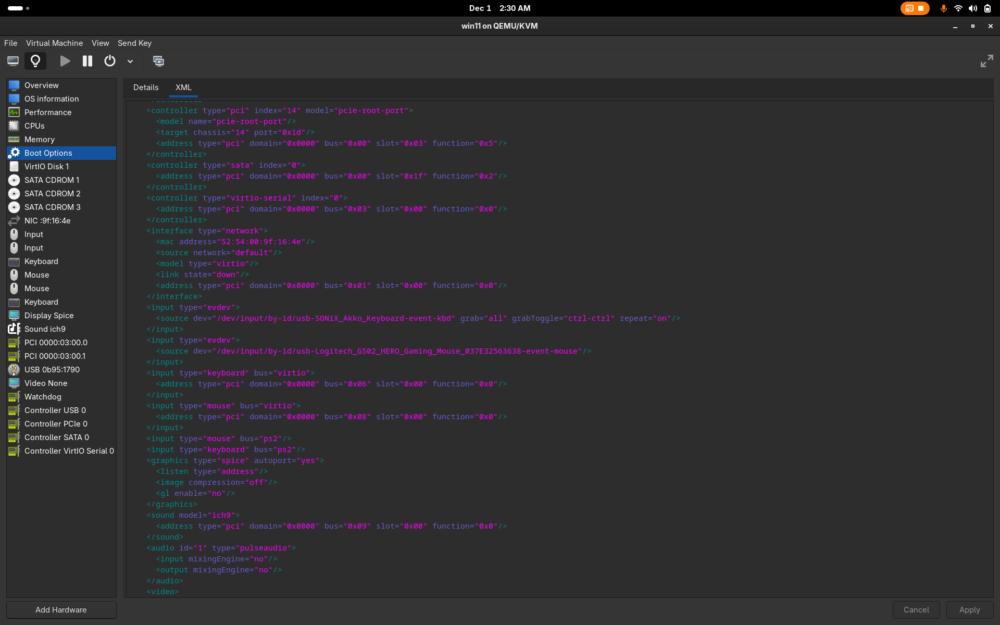
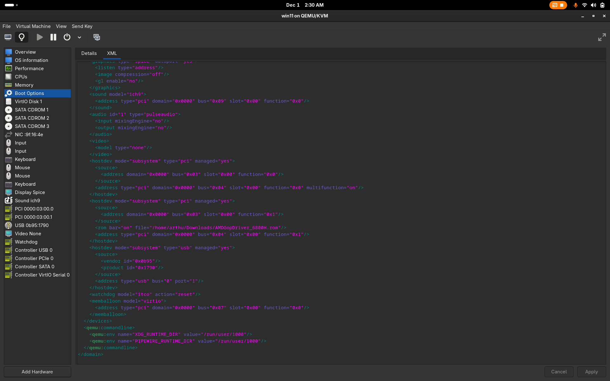

Project Overview
The virtualization project focuses on engaging computational thinking & system-level skills:
Links embedded on this page: XML code; IOMMU Groups Bash Script.

Introduction
Visual Showcase



Short Summary
The introduction serves to explain the beginning steps of creating a VFIO virtual machine. This step will go through how the virtual machine was created and what steps were taken to create a functional nested system.
Requirements
-
virtual machine manager (virt-manager)
libvirt
qemu-full (arch-based package)
properly arranged IOMMU Groups (iommu=pt kernel argument)
Hybrid Integrated + Dedicated GPU setup
AMD GOP Driver (sometimes needed to boot with GPU passthrough, added as a rom bar to the PCI Device)
Methodology
I first installed the necessary packages and made sure I matched the above specified requirements. Note, if you are on a Fedora-based system using SELinux, you will want to find this line: "#security_default_confined = 1" and uncomment it inside of "/etc/libvirt/qemu.conf". (While this does lower security, unless anything sketchy is being done with the VM there are no realistic risks involved).
I moved to enable XML editing inside of Virt-Manager's Preferences, while adding the QEMU/KVM Hypervisor connection from the File top menu. I checked my IOMMU groups with the following bash script.
After making sure my dGPU and its soundcard belong to the same group, I moved on to add my user to the libvirt, kvm & input groups.
I properly set up the Virtual Machine through virt-manager's GUI. I added the dGPU as a Physical PCI Device (courtesy to the IOMMU Groups script used previously), removed redundant devices, and used the improved VirtIO drivers where available. I also added the proper ISO media in order to install Windows as well as the VirtIO guest drivers.
I made sure to autostart my Virtual network passthrough (using NAT): "virsh net-autostart network-name".
Input, Performance, GPU & Audio Passthrough
Visual Showcase




Short Summary
This step goes over how to manage Hardware Acceleration, Performance, Input & Audio reliably inside of our QEMU/KVM virtual machine.
Methodology
Now that we're through with the basics of installing our operating system, the next step is to get our graphics card to be functional.
An essential step for my scenario was to disable Windows's automatic driver downloads from inside of gpedit (Group Policy Editor).
While this should stop Windows from downloading any kind of drivers automatically, unfortunately it doesn't always seem to listen.
I personally had to use DDU (Display Driver Uninstaller) as it still proceeded to unsuccessfully install the graphics driver for my videocard automatically.
In this case, I disabled the Virtual Network device inside of the XML temporarily, and used an offline graphics driver installer specific to my videocard.
Note: Some Nvidia Mobile Videocards might post Error Code 43, requiring you to further hide the fact that you are inside of a virtual machine by creating a fake battery within QEMU, requiring specific vendor information relevant to your device, but I will not be going over that here.
Following, we'll be doing some CPU Pinning, this being the single most important optimization you can make by helping hyperthreading inside of the virtual machine.
Using "lscpu -e" you will get a similar output to one of the pictures available above. This shows the physical CPUs available from your current hardware.
With this information, you can check the provided XML to analyse the pinning syntax and assign CPUs to be isolated inside of the Virtual Machine.
Iothreads and emulatorpins are used inside of the XML as well, assigned to the first (0) and last cores (13) in an attempt to use the lowest load cores available for this task. They help with handling QEMU and IO performance better on qcow storage.
Moving on to Input Management, this is done through Evdev. This means you'll want your input device IDs which can be found as follows: "ls /dev/input/by-id/".
You can test the ID out to see if it matches your device by using this command: "cat /dev/input/by-id/DEVICE_NAME", you should get terminal output on device input (mouse movement, keyboard typing).
To add an input device to the XML, you will need the following tags: "input type="evdev" "source dev="/dev/input/by-id/DEVICE_NAME"/".
Make sure your user is added to the according groups (libvirt, input, kvm).
Tip: Pressing CTRL+CTRL while using my XML layout allows switching between Host & Guest Inputs.
Onto the last step, Audio Passthrough.
Audio passthrough will be run through your user, therefore requiring you to set the variables for "#user" & "#group" to "userid" (found through "id -u") & "kvm", respectively, inside of /etc/libvirt/qemu.conf.
Our passthrough is reliant on the pulseaudio, pipewire or jack backends. I found pulseaudio to be the best fit for my setup, therefore using the following audio tag: audio id="1" type="pulseaudio".
The necessary QEMU arguments are to be found at the bottom of my XML.
While there could be more improvements to be made here, such as Memory Hugepages, or using Looking Glass, they go into too much detail as their return on investment outlives the scope of this description.
Thank you for reaching the end of this description, your patience is highly valued.